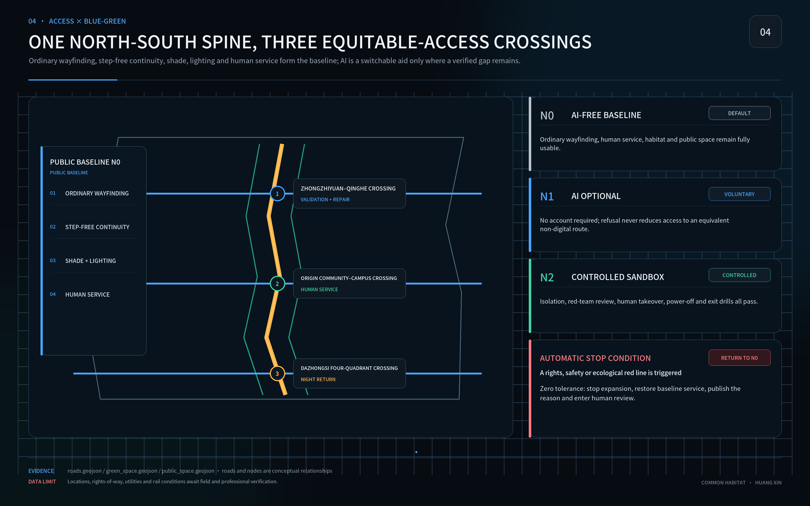

Common Habitat: Human–AI–Nature Urban Design for the Centennial Jingzhang Corridor
Common Habitat uses a complete day as the unit of urban performance and proposes a 90-day pioneer pilot to compare zero-AI, low-tech and optional AI routes. All outcomes remain subject to field testing.
Common Habitat
Human–AI–Nature Urban Design for the Centennial Jingzhang Corridor
Author: Huang Xin — GitHub [@huangxin-design](https://github.com/huangxin-design)
Common Habitat defines one observable urban outcome: people with different ages, bodies, languages, care duties and digital experience should be able to arrive, orient, rest, participate, get help and return safely. This submission contains a design goal, a test protocol and a pilot proposal. It does not claim measured performance, construction approval, committed funding or operating authority.
The proposal forms a One-Day Common Loop along the Jingzhang heritage and innovation corridor. Continuous access, shade, water, habitat, ordinary signage and human service form the public baseline. Optional AI addresses only the remaining gap, and only when an equivalent non-digital route, accountable maintenance, data limits, energy accounting, human takeover and physical removal are all credible.

Design Basis and Source List
The official brief defines an approximately 43.6 km² coordinated research area, an approximately 11.4 km² overall design area and three key areas totalling approximately 368.4 ha. Current GeoJSON boundaries are provisional and support concept generation, visualisation and topology checks only. They cannot support a statutory red line, precise area, permit or engineering conclusion. Source Source
Chinese planning, urban-design and accessibility references frame professional depth. International sources calibrate inclusion, child-friendly and age-friendly practice, ecology and AI ethics. International alignment is not certification; policy context is not proof of local implementation. Official attachments, surveys and professional review remain mandatory before engineering decisions. Standard Source
Nine material gaps remain UNKNOWN: official boundaries, key-area polygons, regulatory controls, ownership and existing buildings, transport counts, municipal capacity, seasonal ecology, heritage controls and operating authority. Missing data does not block concept review, but it blocks statutory, engineering, investment and performance claims. Depth Source
Three-Level Scope Framework
The coordinated level asks how the Jingzhang corridor can operate as an open validation network for public problems. The overall level joins the heritage spine, walking, public services, blue-green systems and renewal projects. The key-area level tests whether a person can complete a real journey through entrances, paths, places to rest and help points. All three levels use the same six-task evidence model. Depth Metric
The spatial structure is one spine, two networks and three test fields. The Jingzhang Common Spine is supported by an Equitable Access Network and a Water–Soil–Habitat Network. The three fields are Zhongzhiyuan for research verification, the Beijing AI Origin Community for public life, and Dazhongsi for interchange and culture. Their current locations and boundaries are conceptual and must be recalculated when official polygons arrive. Spatial data Metric

Coordinated Research Area: Industry and Future City Research
The corridor is proposed as trusted urban validation infrastructure. Enterprises, researchers and public bodies would define real urban tasks and compare a zero-AI baseline, a low-tech solution and an optional AI solution in the same field. Public-interest safeguards become design inputs, test conditions and procurement evidence, reducing the risk of deploying a compelling demonstration that cannot be maintained, explained or removed. Source Depth
A City Test Passport structures the pathway: problem registration, three-way comparison, isolated verification, shadow operation, limited public trial, independent recalculation, and either procurement discussion or exit. Each gate publishes versions, errors, energy, human takeover, weakest-group results and unresolved issues. Enterprises gain reusable task definitions, open interfaces, a shared test field and a failure archive; participation alone conveys no procurement preference, certification or partnership.
Four industry-facing test families are prioritised: accessible mobility, public-service navigation, low-interference cultural guidance, and enterprise-service/public-safety review. If ordinary signage, telephone or human service performs better, “do not procure AI” is a legitimate and useful result. Source Metric
Overall Design Area: Urban Renewal and Regulatory-Plan-Level Urban Design
The One-Day Common Loop connects rail stations, public services, places to rest, weather protection, drinking water, toilets, cultural spaces and human help. Ordinary signage and continuous accessibility define the base version. A removable digital layer may add live information or translation after the baseline works. Depth Spatial data
Official regulatory controls, road red lines, building heights, plot ratios and utility information remain incomplete. The proposal therefore sets a decision order—retain, repair, replace, then trial—without inventing statutory indicators. All current ratios remain provisional calculations with explicit sources and formulas. Standard Metric
Detailed Design of Key Areas
Zhongzhiyuan hosts maintainability and research verification through an open test yard, repair bench, isolated sandbox, failure archive and outage drills. The AI Origin Community hosts ordinary public life through a Common Gateway, continuous shade, rest and water, non-digital signage, a human service desk and six offline information formats. Dazhongsi addresses interchange, night return, culture and complex entrance relationships. Depth Source
Each area uses the same design card: intended users, six tasks, spatial action, zero-AI route, optional technology, physical location, maintainer, test method, stop condition and restoration action. All placements remain conceptual until boundaries, ownership and operating rights are confirmed.

AI Innovation Ecosystem, Personas, and AI+ Scenarios
Recruitment does not assume an average user. Eight capability conditions cover mobility and stamina; vision and colour; hearing and speech; reading and cognitive load; device and digital experience; heat, noise and crowding; care duties; and time or night conditions. A participant may occupy several conditions. Results are published by intersections, and an unrepresented high-risk intersection remains UNKNOWN. Source Metric
The 90-Day Pioneer Pilot is proposed for one verifiable public-life loop in the AI Origin Community, subject to operator and professional confirmation. Days 0–15 audit boundaries, responsibility, existing conditions and six-task baselines. Days 16–30 co-design zero-AI, low-tech and AI candidates. Days 31–60 run isolated and shadow tests. Days 61–75 allow limited public trials. Days 76–90 run network, power and removal drills and issue a continue, modify, reduce or exit decision.
The pilot package contains a defect ledger, a zero-AI public baseline, three reversible interventions, a six-format offline guide plan, task-test records, a three-year cost account, maintenance and emergency responsibilities, procurement acceptance clauses and an open evidence pack. The three interventions focus on the Common Gateway and continuous access, human service and multi-format information, and optional route, translation or status assistance. Evidence determines whether AI is used.
Land Use, Building Scale, and Retain-Renovate-Demolish Strategy
Current land-use and building data explain spatial relationships and recalculation methods; they do not replace official codes, title records, surveys or structural assessment. The sequence protects public-service and heritage continuity, repairs interruptions, and considers new construction last. Permanent work must wait for official boundary, planning, heritage, municipal and structural information. Standard Spatial data
The 90-day pilot is limited to reversible, low-impact and maintainable components: temporary shade and seating, tactile and large-print signs, a human-service desk, and removable sensors or screens. It may not remove existing public service, occupy emergency routes, alter statutory use or create a compulsory digital entrance. Metric
Transport, Rail, Municipal Infrastructure, and Public Services
Transport and services are derived from the six tasks. Every test route needs an accessible entrance, continuous passage, legible landmarks, rest and weather protection, information on water and toilets, human help, night lighting and a safe return. Rail and bus relationships require field verification; the current road-centreline length is only a concept-comparison metric. Spatial data Metric
Basic public service does not require a smartphone, account, identity recognition or AI fluency. The offline plan includes Braille plus a tactile route map, large-print high contrast, child easy-read, older-adult easy-read, audio, and telephone plus on-site human explanation. All six remain PLAN · NOT YET DELIVERED. QR is supplementary only, and each format must be co-created and tested with its intended users. Source Source
Blue-Green Network, Public Space, and Urban Character
The Water–Soil–Habitat Network measures shade, stormwater, soil, native planting, habitat continuity, darkness and maintenance work together. Trees, water and rest support older people, children, persons with disabilities, carers and night workers while providing basic heat and extreme-weather resilience. Source Depth
Ecological release requires at least one complete growing season with records of survival, soil compaction, ponding, heat exposure, night disturbance, maintenance frequency and failure. The AI resource account includes electricity, network and storage, device replacement, repair labour, spares and retirement. Expansion stops when ecology worsens, measurement fails or burden shifts to the least-served group. Metric Spatial data

Renewal Projects, Implementation Policy, and Phasing
Eight actions organise delivery: the One-Day Common Loop, Common Gateway, continuous shade and rest, human service and multi-format information, water and soil repair, low-interference cultural nodes, a trusted urban validation field, and the Jingzhang Open Ledger. Every action records an owner role, prerequisite data, zero-AI version, test group, maintenance resources, stop condition and restoration action. Metric Spatial data
Ninety days produces a pioneer pilot and a procurement decision, not corridor-wide construction. G0 accepts the non-digital baseline; G1 permits a small optional service; G2 permits only isolated or controlled verification. Each gate requires both professional review and affected-user confirmation. Missing critical participants, a red-line event, or interrupted budget and contract automatically returns service to N0.
Required roles are a site owner, public-service owner, accessibility and co-design lead, ecology lead, data and safety lead, and independent reviewer. Names, mandates, funding and long-term maintenance contracts are not yet confirmed and must be secured before construction or public operation.
Metrics, Area Recalculation, and Compliance Matrix
Metrics distinguish facts, provisional recalculations, proposal targets and UNKNOWN values. Current package geometry recalculates approximately 11.41 km² of site, 10.96% green ratio and 4.03% public-space ratio. These figures prove internal traceability only; they are not official current conditions or commitments. Metric Metric Metric
Pilot targets include 100% non-digital coverage for critical services, zero new identity-recognition features, zero minutes of basic-service interruption after planned AI removal, and zero tolerance for rights, safety or ecological red-line events. Results are published by eight capability conditions and intersections, with the weakest and best observed groups shown together. Metric Metric
AI advances only when it produces a perceptible improvement over both N0 and low-tech versions, repeats under independent testing, fits a three-year cost and maintenance envelope, and does not worsen the weakest group, ecology or human workload. If low tech reaches the target, AI is not adopted.

Risk, Copyright, and Compliance
Principal risks are provisional geometry being mistaken for statutory control, targets being mistaken for achieved results, missing vulnerable participants, AI demonstrations replacing basic services, child-data overreach, hidden energy and maintenance costs, vendor lock-in, decorative ecology and absent owners. Every risk is paired with counter-evidence, a stop action and an accountable role. Negative findings remain in the open record. Source Depth
Child-facing scenarios default to no collection of identity, biometrics, precise location, raw voice, identifiable work or long-term profiles. Any breach stops the trial. Braille requires professional transcription, two qualified checks and testing with blind users; tactile route maps require separate orientation review. The guide plan, pilot targets and international alignment are not certificates, compliance opinions or completed deliverables.
This work participates in the Haidian-led open call for the Centennial Jingzhang AI Innovation Belt. It is a competition concept, not a formal plan, government approval, investment promise, procurement decision, engineering conclusion or operating authorisation. Original text and graphics follow the package licence; third-party sources are cited without implying permission to redistribute their pages, imagery or marks.
References
The official task, site package, source registry and local standard snapshots form the primary evidence layer. UN, WHO, UNESCO, W3C and UNEP materials calibrate methods. The complete source record, permitted uses, prohibited uses, access dates and local paths are in sources.json; professional mapping is in standard_matrix.json and design_depth_matrix.json. Source Source
Spatial data are in geometry/, metrics in metrics.json, assumptions and gaps in assumptions.json, required tasks in compliance_matrix.json, and validation in self_check.json. These structured files are the audit and recalculation layer; the narrative keeps only evidence anchors necessary for human decisions.